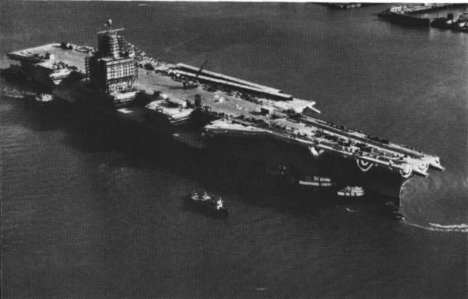
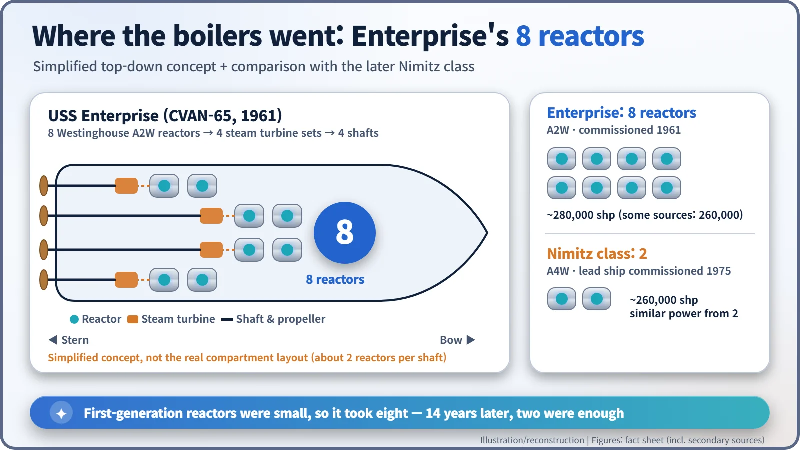
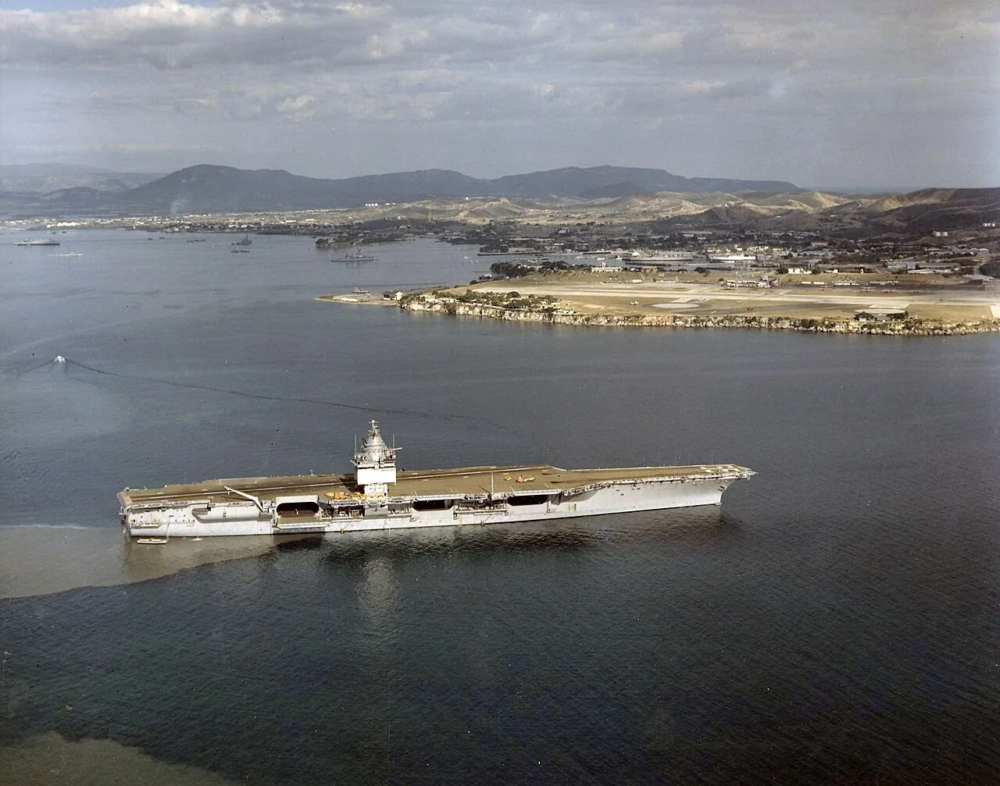
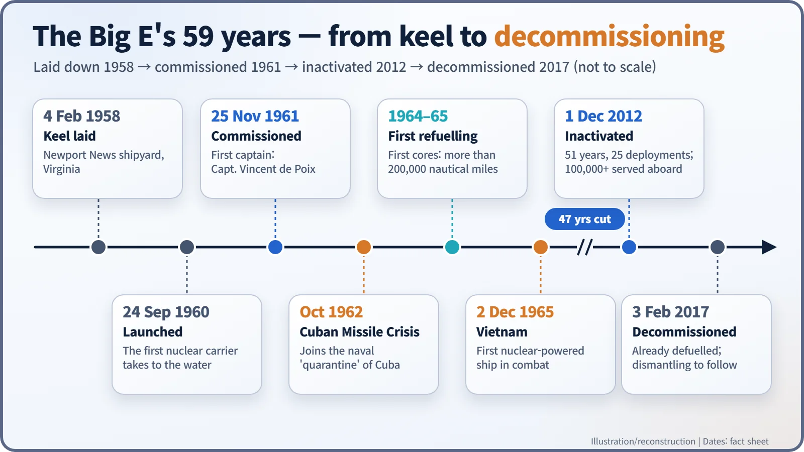
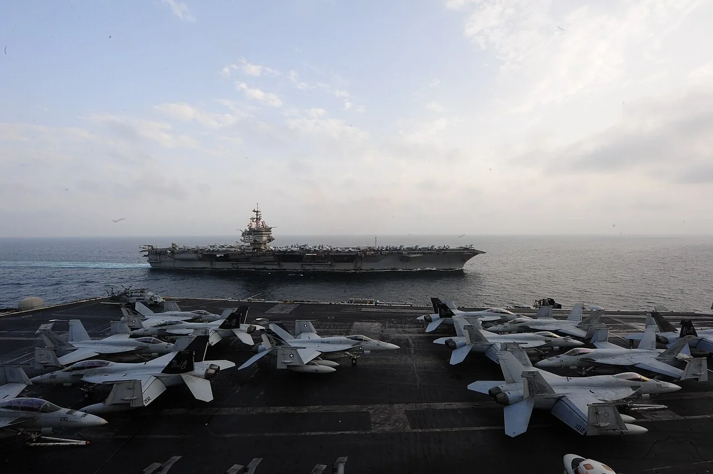

Nuclear History · 166
Eight Reactors Where the Boilers Used to Be — USS Enterprise (CVAN-65), the First Nuclear-Powered Aircraft Carrier (1961)
One reactor in place of every boiler: the Big E steamed more than 200,000 nautical miles on her first cores, served 51 years, and left the Navy a costly lesson along the way.
On 25 November 1961 the US Navy commissioned USS Enterprise (CVAN-65), the world's first nuclear-powered aircraft carrier. Instead of oil-fired boilers she carried eight Westinghouse A2W reactors, steamed more than 200,000 nautical miles on her first cores and served for 51 years. Her cost, and the effort needed to take her apart, are part of the story too.
Same name, very different ship
During the Second World War, propeller-driven aircraft roared off the flight deck of the aircraft carrier USS Enterprise (CV-6) in the Pacific. Among the young naval aviators who served aboard her was Vincent P. de Poix (1916–2015). On 25 November 1961, sixteen years after the war ended, he became the first commanding officer of the eighth US Navy ship to carry the same name. The name was familiar; the ship was not. She had no funnel. Deep in her hull, instead of oil-fired boilers, eight nuclear reactors were making heat. [2]
After the submarine, a floating airfield
Once the submarine Nautilus had signalled "underway on nuclear power" in January 1955, the US Navy began looking at surface ships. An aircraft carrier is a fuel-hungry beast. What if one could steam at more than 30 knots for as long as it liked without worrying about the next tanker? That was the picture the Navy had in mind.
Her keel was laid on 4 February 1958 at the Newport News shipyard in Virginia, and she was launched on 24 September 1960. She was about 332 m long when built (about 342 m after later refits), a giant even by carrier standards. [1] [2]

Why eight?
The heart of Enterprise was a set of eight Westinghouse A2W pressurised-water reactors. The code name is a little label in itself: A for aircraft carrier, 2 for the designer's core-design generation, W for Westinghouse. Water heated in the reactors made steam, and the steam spun four sets of turbines that turned four propeller shafts. Total output is usually given as about 280,000 shaft horsepower (some sources say 260,000).
Eight sounds like overkill, but the logic was simple. The designers essentially put one reactor where an earlier carrier had one oil-fired boiler, and first-generation naval reactors did not produce much power each. So they made up the difference with numbers. The crew later turned the arrangement into a motto: "Eight Reactors, None Faster."

Into a crisis within a year, and the first refuelling
No funnel meant a different island, too. A boxy superstructure covered with flat-panel phased-array radars, a system known as SCANFAR that only Enterprise and the nuclear cruiser Long Beach carried, became the ship's distinctive face. It was removed in a refit between 1979 and 1982.

Her first real-world mission came sooner than anyone expected. In October 1962, during the Cuban Missile Crisis, she joined other carriers in the naval "quarantine" of Cuba ordered by President Kennedy. In 1964 she would also circle the globe without refuelling, in company with a nuclear cruiser and a nuclear frigate.
The idea that a nuclear ship can run forever is a myth. In 1964–65 Enterprise went back to the shipyard to have the cores of all eight reactors replaced for the first time. By then she had steamed more than 200,000 nautical miles (roughly 370,000 km) on her first cores. Refuelling had gone from something done every few days to something done every few years, and new cores tested in 1971 were designed to hold roughly ten years' worth of energy. One caveat: nuclear power took care of the ship's own fuel, not everything else. Jet fuel, ammunition and food for thousands of people still had to be brought out to her. On 2 December 1965, off Vietnam, she became the first nuclear-powered ship to launch aircraft in combat. [1]
The price of eight, and a successor with two
The catch was money. Her construction cost grew to about $451.3 million. The Navy had planned to build six ships of the class, but rising costs meant Enterprise stayed the only one. The next two carriers, America (1965) and John F. Kennedy (1968), burned oil.
The Navy returned to nuclear carriers with USS Nimitz, commissioned in 1975. The Nimitz class needed just two A4W reactors, each far more powerful, to deliver about 260,000 shaft horsepower. Going from eight reactors to two in 14 years shows how quickly naval reactor technology had matured.

51 years, 25 deployments
Over 51 years Enterprise made 25 deployments, and more than 100,000 sailors and Marines served aboard her. At her inactivation ceremony in Norfolk on 1 December 2012, Navy Secretary Ray Mabus put it simply: "The USS Enterprise was the first of its kind." Her commanding officer, Capt. William C. Hamilton Jr., added: "Enterprise is a special ship and crew, and it was special long before I got here." [3]

By the time she was formally decommissioned on 3 February 2017, all the fuel had already been removed from her reactors. Getting the eight reactor plants themselves out, however, means cutting deep into the hull. The disposal approach has been re-examined through an environmental impact statement, and dismantling has taken many years. Nuclear power changed what "range" meant for a carrier; it also left behind the homework of cost and dismantling. The name will pass to a ninth Enterprise, the future CVN-80. [4] [5] [6]